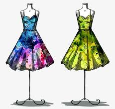

Estilos de faldas, para la mujer moderna, elegante y autentica.
Este estilo de falda, tienen una caida liviana ideal para este verano 2022, quedan elegantes y muy presentable para cualquier ocasión.
Si te gustaron las faldas, vas a soñar con estos 2 estilos de vestidos super coloridos,no te puede falta en este verano.
Con estos tips Ya estas preparada para disfrutar del dia y noche de este Verano22.